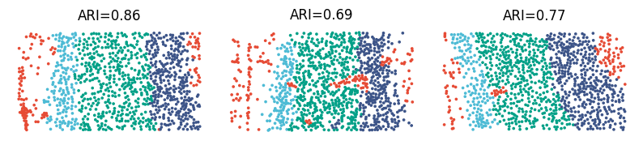

Tutorial 3: Multi-sample integration (STARmap)
Here, we validated the capability of our multi-sample integration model, GraphPCA_multi, a multi-sample extension of GraphPCA through aggregating multiple spatial neighborhood graphs and expression profiles into one matrix.
To achieve it, besides the BZ5 sample used in tutorial2, we obtained two additional tissue sections BZ9 and BZ14 generated by STARmap from different mice. Cells in all sections are annotated into four cortical layers (L1, L2/3, L5 and L6) according to the original publication.
Load packages
[1]:
import GraphPCA as sg
import scanpy as sc
import anndata as ad
import numpy as np
import pandas as pd
import squidpy as sq
import scipy
from sklearn.cluster import KMeans
from sklearn.metrics import pairwise_distances as pair
from sklearn.metrics import adjusted_rand_score as ari_score
from sklearn.neighbors import kneighbors_graph
Load data
[2]:
slice_inds = np.arange(0,3)
samples = ["BZ5","BZ9","BZ14"]
data_path = "../../data/STARmap/"
save_path = "../../results/STARmap/"
PCA_components = 50
[3]:
Batch_list = []
adj_list = []
for sample_id in slice_inds:
print(samples[sample_id])
STARmap_expr = pd.read_csv(data_path + "STARmap_expr_" + samples[sample_id] + ".csv",index_col=0).T
STARmap_loc = pd.read_csv(data_path + "STARmap_loc_" + samples[sample_id] + ".csv",index_col=0)
groundTruth = pd.read_csv(data_path + "STARmap_groundtruth_" + samples[sample_id] + ".csv",index_col=0)["z"].astype("category")
adata = ad.AnnData(STARmap_expr)
adata.obs = STARmap_loc.copy()
adata.uns["spatial"] = np.array(STARmap_loc)
adata.obs["groundtruth"] =np.array(groundTruth)-1
adata.obs["groundtruth"] = adata.obs["groundtruth"].astype(int).astype("category")
adata.var_names_make_unique()
# make spot name unique
adata.obs_names = [x+'_'+ samples[sample_id] for x in adata.obs_names]
## Constructing the spatial network
x_array=adata.obs["x"].tolist()
y_array=adata.obs["y"].tolist()
location=np.array([x_array, y_array]).T.astype(np.float32)
n_neighbors = 7
graph = kneighbors_graph(np.asarray(location), int(n_neighbors), metric='euclidean',
metric_params={}, include_self=False)
graph = 0.5 * (graph + graph.T)
adata.uns["adj"] = graph
adata.obsm["spatial"] = location
# Normalization
sc.pp.filter_genes(adata, min_cells=20)
sc.experimental.pp.normalize_pearson_residuals(adata)
sc.pp.scale(adata)
adj_list.append(adata.uns['adj'])
Batch_list.append(adata)
BZ5
BZ9
BZ14
Concat the scanpy objects for multiple slices
[4]:
adata_concat = ad.concat(Batch_list, label="slice_name", keys=samples[slice_inds[0]:slice_inds[-1]+1])
adata_concat.obs['groundtruth'] = adata_concat.obs['groundtruth'].astype('category')
adata_concat.obs["batch_name"] = adata_concat.obs["slice_name"].astype('category')
print('adata_concat.shape: ', adata_concat.shape)
adata_concat.shape: (3190, 159)
Concat the spatial network for multiple slices
[5]:
adj_concat = np.asarray(adj_list[0].todense())
for batch_id in range(1,len(samples[slice_inds[0]:slice_inds[-1]+1])):
adj_concat = scipy.linalg.block_diag(adj_concat, np.asarray(adj_list[batch_id].todense()))
adata_concat.uns['edgeList'] = np.nonzero(adj_concat)
adata_concat.uns['network'] = scipy.sparse.csr_matrix(adj_concat)
[6]:
adata_concat
[6]:
AnnData object with n_obs × n_vars = 3190 × 159
obs: 'x', 'y', 'groundtruth', 'slice_name', 'batch_name'
uns: 'edgeList', 'network'
obsm: 'spatial'
Perform GraphPCA_multi
[7]:
Z,_ = sg.Run_GPCA(adata_concat, network=adata_concat.uns['network'], n_components = 50, method = "knn", _lambda = 0.6,n_neighbors=7,
save_reconstruction=True)
adata_concat.obsm["GraphPCA"] = Z
print(Z.shape)
(3190, 50)
Clustering
[8]:
estimator = KMeans(n_clusters=4)
res = estimator.fit(Z[:,:])
lable_pred=res.labels_
adata_concat.obs["GPCA_pred"]= lable_pred
adata_concat.obs["GPCA_pred"] = adata_concat.obs["GPCA_pred"].astype('category')
adata_concat.obsm["GraphPCA"] = Z
print(ari_score(adata_concat.obs.GPCA_pred,adata_concat.obs.groundtruth))
0.7636451157316565
Visualization
[9]:
adata_concat.obs['GPCA_pred'] = pd.Series(sg.match_cluster_labels(adata_concat.obs['groundtruth'], adata_concat.obs['GPCA_pred'].values),
index=adata_concat.obs.index, dtype='category')
[10]:
Batch_list = []
for section_id in samples[slice_inds[0]:slice_inds[-1]+1]:
Batch_list.append(adata_concat[adata_concat.obs['batch_name'] == section_id])
for bb in range(3):
refined_pred=sg.refine(sample_id=Batch_list[bb].obs.index.tolist(), pred=Batch_list[bb].obs["GPCA_pred"].tolist(),
dis= pair(Batch_list[bb].obsm["spatial"]), shape="generic",neighbor_num=7)
Batch_list[bb].obs["GPCA_pred"] = refined_pred
Batch_list[bb].obs["GPCA_pred"] = Batch_list[bb].obs["GPCA_pred"].astype('category')
[11]:
import matplotlib.pyplot as plt
spot_size = 200
title_size = 12
Ref_colors = ["#E64B35FF","#4DBBD5FF","#00A087FF","#3C5488FF"]
ARI_list = []
for bb in range(3):
ARI_list.append(round(ari_score(Batch_list[bb].obs['groundtruth'], Batch_list[bb].obs['GPCA_pred']), 2))
Batch_list[bb].uns['GPCA_pred_colors'] = Ref_colors
fig, ax = plt.subplots(1, 3, figsize=(10, 5), gridspec_kw={'wspace': 0.05, 'hspace': 0.1})
_sc_0 = sc.pl.spatial(Batch_list[0], img_key=None, color=['GPCA_pred'], title=[''],
legend_loc=None, legend_fontsize=12, show=False, ax=ax[0], frameon=False,
spot_size=spot_size)
_sc_0[0].set_title("ARI=" + str(ARI_list[0]), size=title_size)
_sc_1 = sc.pl.spatial(Batch_list[1], img_key=None, color=['GPCA_pred'], title=[''],
legend_loc=None, legend_fontsize=12, show=False, ax=ax[1], frameon=False,
spot_size=spot_size)
_sc_1[0].set_title("ARI=" + str(ARI_list[1]), size=title_size)
_sc_2 = sc.pl.spatial(Batch_list[2], img_key=None, color=['GPCA_pred'], title=[''],
legend_loc=None, legend_fontsize=12, show=False, ax=ax[2], frameon=False,
spot_size=spot_size)
_sc_2[0].set_title("ARI=" + str(ARI_list[2]), size=title_size)
plt.show()
